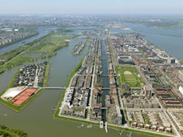
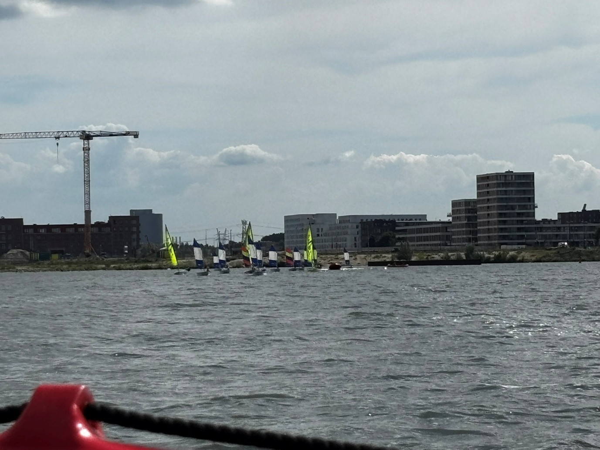

Over mij

Mijn naam is Fynn Tervoort. Ik ben 16 jaar oud, ik ben geboren in Amsterdam en ik woon al mijn hele leven op IJburg. Ik kom van het Berlage lyceum en ik deed daar techniek. Ik ga nu de opleiding software developer opleiding doen aan het mediacollege te Amsterdam.
Woonplaats
ik woon op ijburg woon. IJburg is een eiland dat steeds groter wordt. Ik woon op het stukje steigereiland al mn hele leven. Ik ben wel verhuisd, maar dat was ook op steigereiland naar een groter huis. Ik heb dus ook best veel vrienden hier en bekende gezichten ook al zijn het geen vrienden of familie leden. Ik woon hier ook met mijn ouders en mijn broertje. Ik heb helaas geen huisdieren en heb ik ook nooit gehad. Mijn werk zit op de top van het eiland. Ik werk bij een restaurant en een zeilschool, bij allebei de banen ben ik actief bezig.
Werk en vrije tijd
In mijn vrije tijd doe ik niet zoveel. Ik game, werk en sport en that’s it. Ik spreek natuurlijk ook met vrienden af en ga naar buiten om wat te doen, maar buiten dat doe ik dus niet super veel bijzonders. Na werk bij de zeilschool mag ik ook zelf soms een boot mag pakken en dan zelf gaan zeilen met mn collega’s en dat is heel leuk! Zelf vind ik zeilen een aanrader.
Ervaring

Kan ik al met programmeren? Ik kan al Engels Ik heb een tijdje dingen getweaked in XML en js. Ik heb heel lang geleden met mijn vader ooit een website en game gemaakt.
Top 10

Top 10 dingen van mij:
1. Marvel
2. Mr Robot
3. Star Wars franchise
4. GTA V
5. Titanfall 2
6. Dune franchise
7. Batman
8. Spotify
9. Metallica
10. Dexter
Bonus: Breaking Bad